Sprawdzenie falownika
„Czy Twój falownik współpracuje z magazynem?”
Wersja 1: 6 kroków · wersja 2: 4 kroki
- Czy po wejściu z kafla widzisz, że Twoja odpowiedź została, i wiesz, jak ją zmienić?
- Czy wiesz, co zrobić na każdym ekranie, bez czytania instrukcji?
- Czy wynik „pasuje / nie pasuje / sprawdzimy” jest dla Ciebie jasny?
- Zrób zdjęcie tabliczki swojego albo znajomego falownika i napisz w komentarzu, co odczytał sklep.
Co odpadło względem wersji 1: lista marek na wejściu (marka przyszła z kafla); zdjęcie tabliczki i przypadki Huawei oraz „Nie wiem / inny” są po „zmień”.
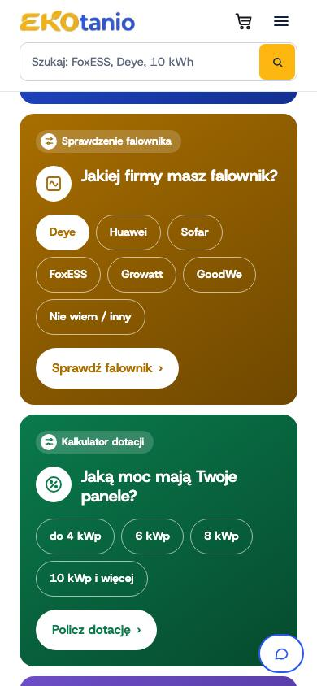
Kafel B na stronie narzędzi
Kafel „Sprawdzenie falownika” w wersji B: klient zaznacza markę (Deye) na kaflu i dotyka „Sprawdź falownik ›”.
Otwórz kafle B w sklepie ↗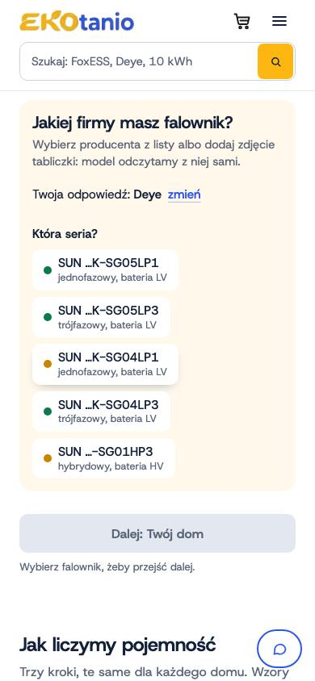
Wejście: od razu krok 2
Dobór otwiera się na falowniku: zamiast listy marek linijka „Twoja odpowiedź: Deye · zmień”, pod nią od razu wybór serii Deye. Panele są zaznaczone („Tak, mam”), bo kto ma falownik, ma panele.
Otwórz ten krok w sklepie ↗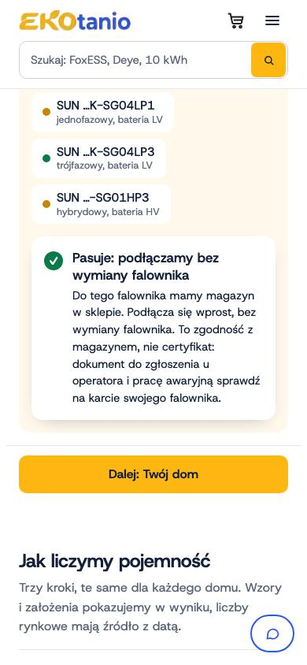
Krok 2
Klient wybiera serię (SG05LP1): werdykt w karcie pod listą, czy do tego falownika mamy magazyn.
Otwórz ten krok w sklepie ↗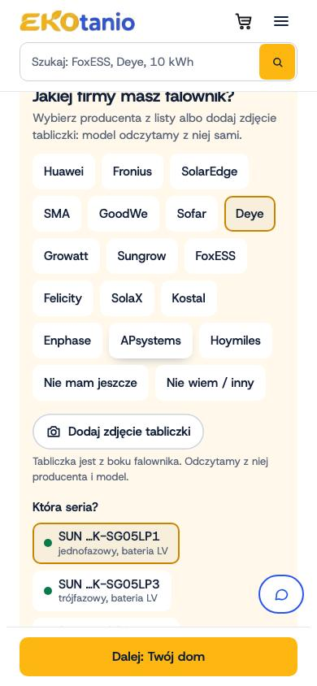
Krok 3
„zmień” przy odpowiedzi wraca do pierwszego kroku: lista marek i zdjęcie tabliczki, wybór Deye zostaje zaznaczony. Tu da się sprawdzić inny falownik (Huawei, „Nie wiem / inny”), jak w wersji 1.
Otwórz ten krok w sklepie ↗Dobór magazynu
„Jaki magazyn dla Twojego domu?”
Wersja 1: 7 kroków · wersja 2: 7 kroków
- Czy po wejściu z kafla widzisz, że Twoja odpowiedź została, i wiesz, jak ją zmienić?
- Czy pytania są zrozumiałe dla kogoś, kto nie zna się na fotowoltaice?
- Czy wynik mówi jasno, co kupujesz i ile zapłacisz?
- Czy kwota w koszyku zgadza się z kwotą na przycisku?
Co odpadło względem wersji 1: osobny zrzut ekranu 1 z pytaniem o panele (odpowiedź przyszła z kafla).
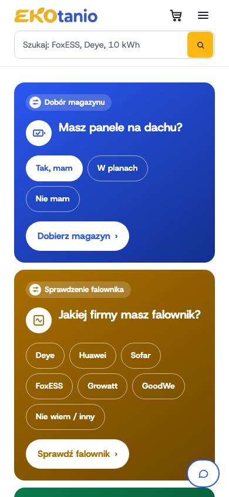
Kafel B na stronie narzędzi
Kafel „Dobór magazynu” w wersji B: klient zaznacza „Tak, mam” przy pytaniu o panele i dotyka „Dobierz magazyn ›”.
Otwórz kafle B w sklepie ↗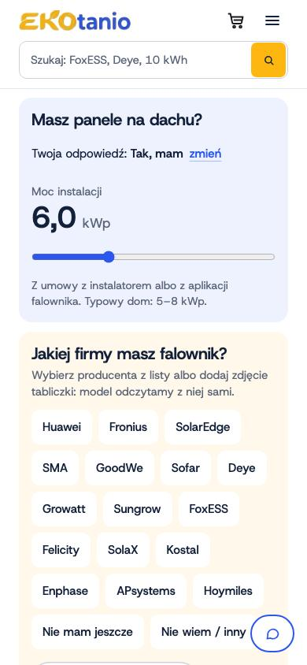
Wejście: od razu krok 2
Dobór otwiera się na ekranie 1 z odpowiedzią z kafla w linijce „Twoja odpowiedź: Tak, mam · zmień”. Zostaje suwak mocy paneli, pod nim pytanie o falownik.
Otwórz ten krok w sklepie ↗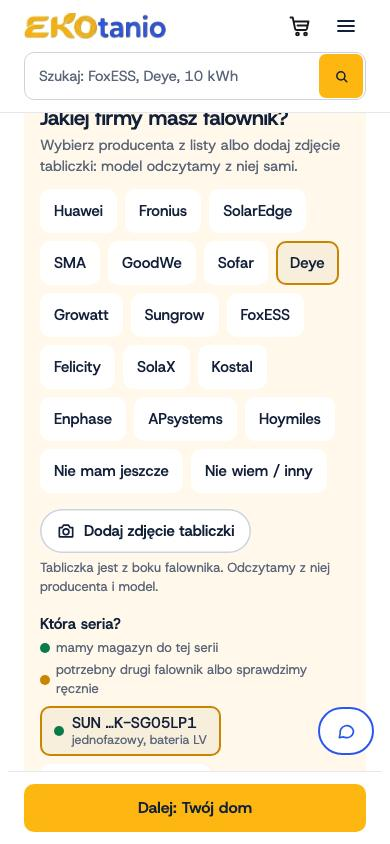
Krok 2
Moc 6 kWp, falownik Deye SG05LP1: zielona kropka przy serii = mamy magazyn.
Otwórz ten krok w sklepie ↗
Krok 3
Ekran 2: rachunek (domyślnie 350 zł), zasilanie awaryjne, pompa lub auto, rozliczenie.
Otwórz ten krok w sklepie ↗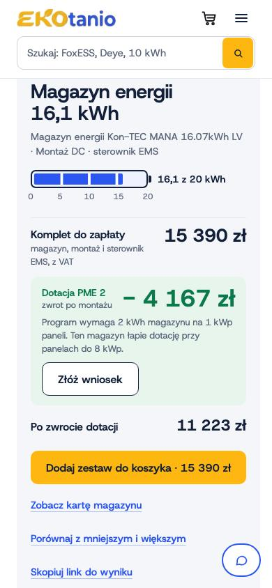


Krok 6
Koszyk po „Dodaj zestaw”: czy kwota w koszyku = kwota na przycisku.
Otwórz ten krok w sklepie ↗Kalkulator dotacji
„Ile dotacji PME 2 dostaniesz na magazyn?”
Wersja 1: 7 kroków · wersja 2: 6 kroków
- Czy po wejściu z kafla widzisz, że Twoja odpowiedź została, i wiesz, jak ją zmienić?
- Czy rozumiesz, od czego zależy kwota dotacji?
- Czy wiesz, kto i kiedy dostaje pieniądze z dotacji?
- Czy coś na ekranie przeczy innemu ekranowi (kwoty, opisy, „cena przykładowa”)?
Co odpadło względem wersji 1: pierwszy ekran kalkulatora z suwakiem mocy i osobny zrzut wyboru typu falownika (krok 2 widać od razu po wejściu).
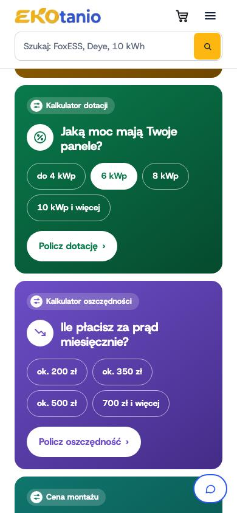
Kafel B na stronie narzędzi
Kafel „Kalkulator dotacji” w wersji B: klient zaznacza moc paneli (6 kWp) i dotyka „Policz dotację ›”.
Otwórz kafle B w sklepie ↗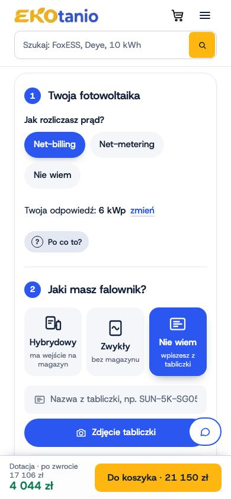
Wejście: od razu krok 2
Kalkulator otwiera się z mocą z kafla w linijce „Twoja odpowiedź: 6 kWp · zmień” (rozliczenie zostaje, domyślnie net-billing). Pod linijką od razu krok 2: jaki masz falownik.
Otwórz ten krok w sklepie ↗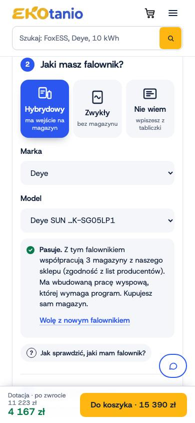
Krok 2
Krok 2: hybrydowy, marka Deye i model SG05LP1 z listy (tu też jest „Zdjęcie tabliczki”).
Otwórz ten krok w sklepie ↗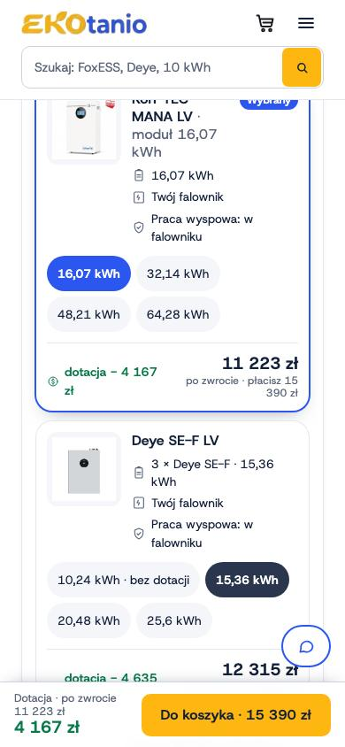
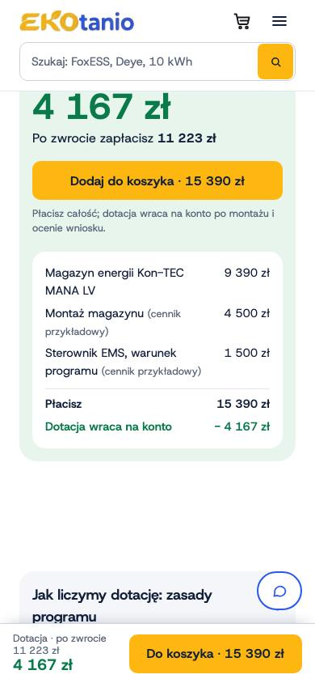
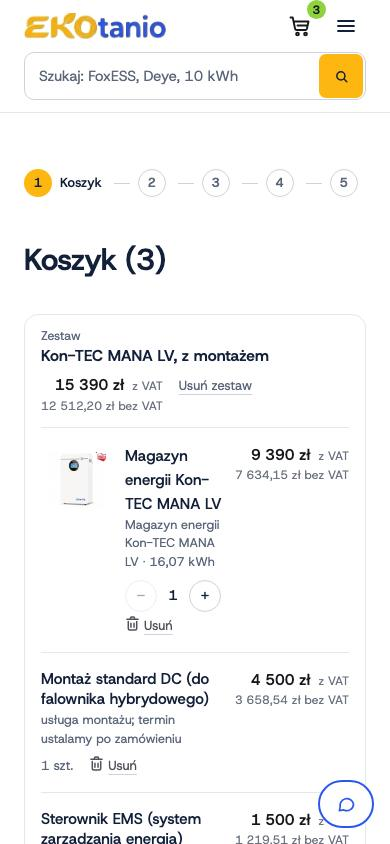
Oszczędność z magazynem
„O ile magazyn obniży Twój rachunek?”
Wersja 1: 7 kroków · wersja 2: 7 kroków
- Czy po wejściu z kafla widzisz, że Twoja odpowiedź została, i wiesz, jak ją zmienić?
- Czy od razu widzisz, ile zaoszczędzisz rocznie i po ilu latach się zwróci?
- Czy wiesz, jak sprawdzić, czy masz opusty czy net-billing?
- Czy kwota zestawu jest ta sama w kalkulatorze, w doborze i w koszyku?
Co odpadło względem wersji 1: pierwszy ekran z suwakiem rachunku (rachunek przyszedł z kafla).
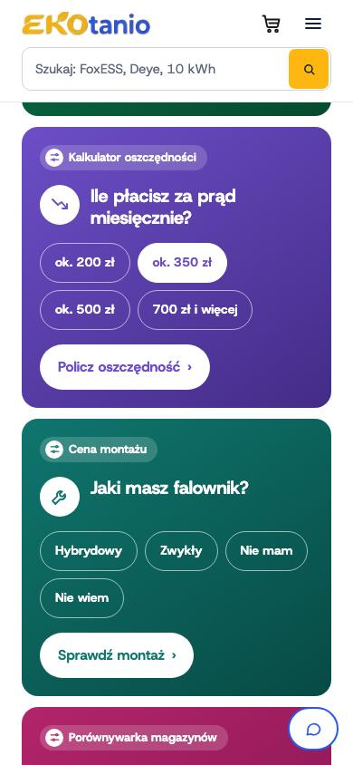
Kafel B na stronie narzędzi
Kafel „Kalkulator oszczędności” w wersji B: klient zaznacza rachunek (ok. 350 zł) i dotyka „Policz oszczędność ›”.
Otwórz kafle B w sklepie ↗Wejście: od razu krok 2
Kalkulator otwiera się z rachunkiem z kafla w linijce „Twoja odpowiedź: ok. 350 zł · zmień”, pod nią krok 2: panele na dachu.
Otwórz ten krok w sklepie ↗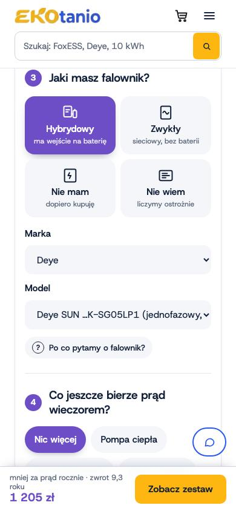
Krok 2
Klient zmienia rozliczenie na net-billing i wybiera swój falownik: Deye SG05LP1 (hybrydowy, mamy do niego magazyn).
Otwórz ten krok w sklepie ↗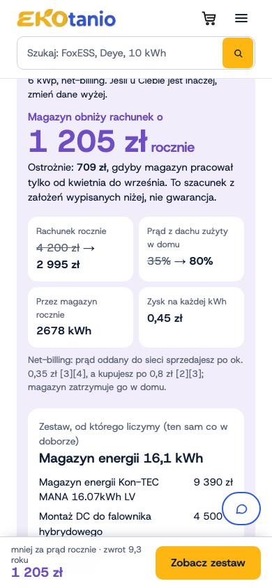
Krok 3
Wynik: o ile spadnie rachunek rocznie, wariant ostrożny, rachunek przed i po, autokonsumpcja.
Otwórz ten krok w sklepie ↗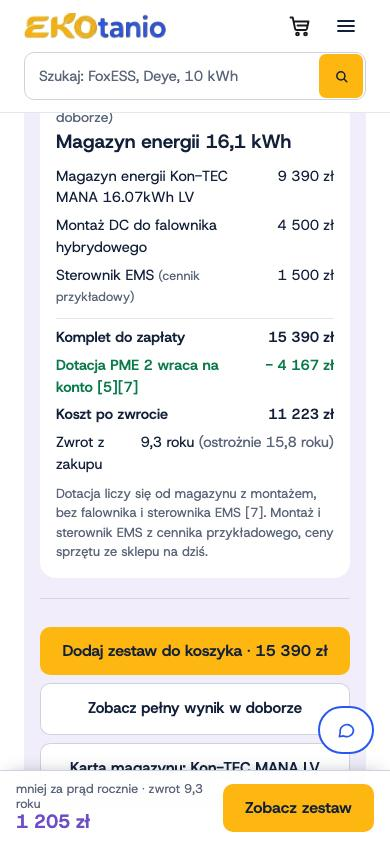
Krok 4
Zestaw, od którego liczymy: pozycje z ceną, dotacja, koszt po zwrocie, zwrot w latach.
Otwórz ten krok w sklepie ↗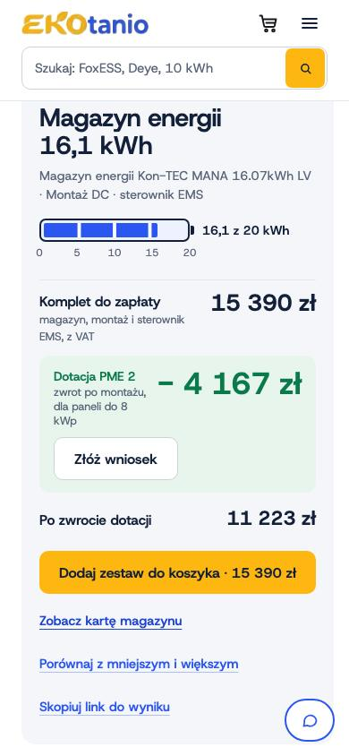
Krok 5
„Zobacz pełny wynik w doborze”: dobór otwiera się od razu na wyniku, ten sam zestaw i kwota.
Otwórz ten krok w sklepie ↗
Cena montażu u Ciebie
„Ile kosztuje montaż magazynu u Ciebie?”
Wersja 1: 6 kroków · wersja 2: 6 kroków
- Czy po wejściu z kafla widzisz, że Twoja odpowiedź została, i wiesz, jak ją zmienić?
- Czy rozumiesz, co płacisz teraz, a co wyceniamy po oględzinach?
- Czy cena montażu jest ta sama tu, na stronie „Montaż” i w koszyku?
- Czego brakuje Ci, żeby zamówić montaż (termin, wykonawca, obszar)?
Co odpadło względem wersji 1: pierwszy ekran z czterema kafelkami typu falownika (typ przyszedł z kafla).
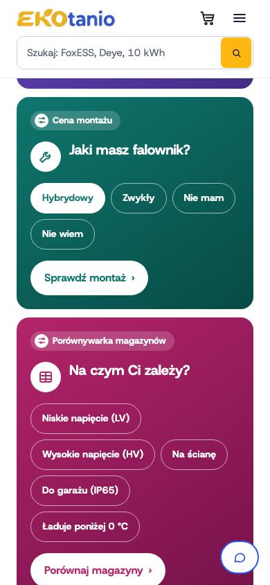
Kafel B na stronie narzędzi
Kafel „Cena montażu” w wersji B: klient zaznacza „Hybrydowy” i dotyka „Sprawdź montaż ›”.
Otwórz kafle B w sklepie ↗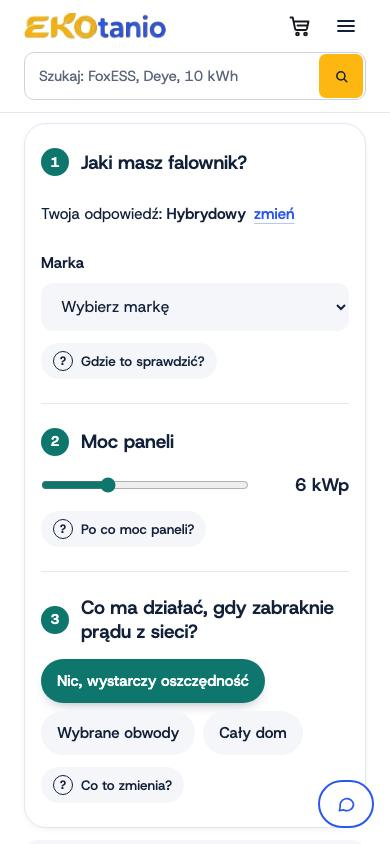
Wejście: od razu krok 2
Narzędzie otwiera się z typem falownika z kafla w linijce „Twoja odpowiedź: Hybrydowy · zmień”; zamiast czterech kafelków typu od razu pytanie o markę i model.
Otwórz ten krok w sklepie ↗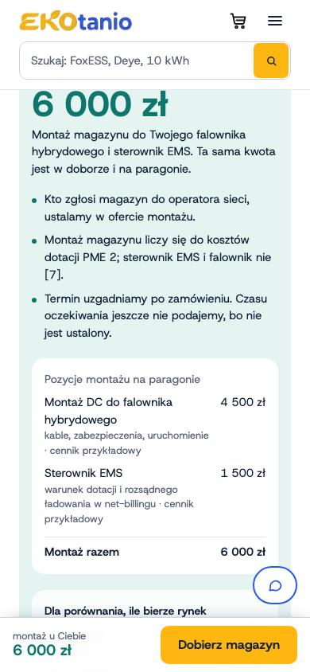
Krok 2
Klient ma Deye SG05LP1: montaż DC do jego falownika i sterownik EMS, bez falownika w zestawie.
Otwórz ten krok w sklepie ↗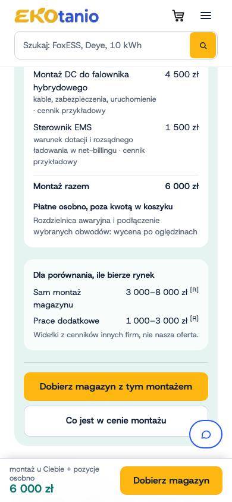
Krok 3
Zasilanie awaryjne wybranych obwodów: rozdzielnica dochodzi jako pozycja osobno, wycena po oględzinach.
Otwórz ten krok w sklepie ↗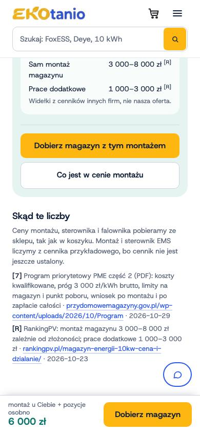
Krok 4
Dla porównania widełki rynku ze źródłem i wyjścia: dobór z tym montażem, co jest w cenie montażu.
Otwórz ten krok w sklepie ↗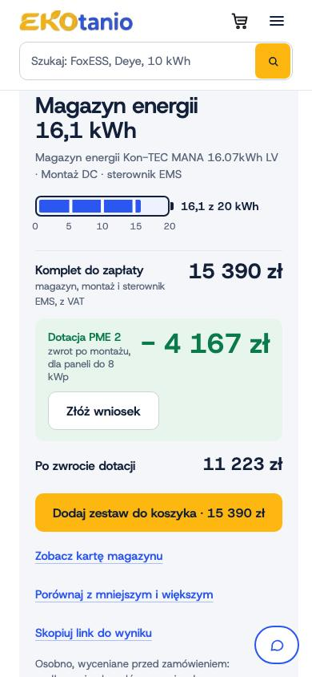
Krok 5
„Dobierz magazyn z tym montażem”: dobór na wyniku, z tym samym falownikiem i zasilaniem awaryjnym.
Otwórz ten krok w sklepie ↗Porównanie zestawów
„Mniejszy, polecany czy większy zestaw?”
Wersja 1: 9 kroków · wersja 2: 6 kroków
- Czy po wejściu z kafla widzisz, że Twoja odpowiedź została, i wiesz, jak ją zmienić?
- Czy na jednej mierze od razu widzisz, który zestaw brać?
- Czy rozumiesz, dlaczego mniejszy może stracić dotację, a większy może nie mieć sensu?
- Czy kwota na karcie jest ta sama w doborze i w koszyku?
Co odpadło względem wersji 1: wejście z wyniku doboru i z karty magazynu (zostają w sklepie jako inne wejścia) oraz przypadek małego dachu; tu wejście jest z kafla B.
Kafel B na stronie narzędzi
Kafel „Porównanie zestawów” w wersji B: klient zaznacza „Hybrydowy” i dotyka „Porównaj zestawy ›”.
Otwórz kafle B w sklepie ↗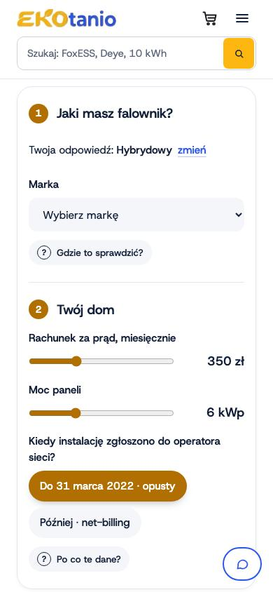
Wejście: od razu krok 2
Porównanie otwiera się z typem falownika z kafla w linijce „Twoja odpowiedź: Hybrydowy · zmień”; od razu pytanie o markę i model, pod nim „Twój dom”.
Otwórz ten krok w sklepie ↗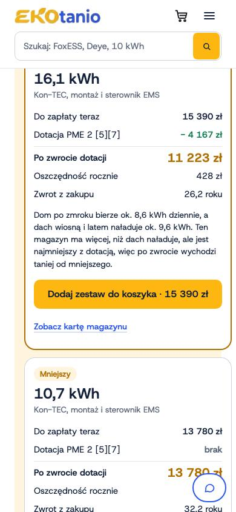
Krok 2
Deye SG05LP1: polecany zestaw na górze, do zapłaty, dotacja, po zwrocie, oszczędność i zwrot.
Otwórz ten krok w sklepie ↗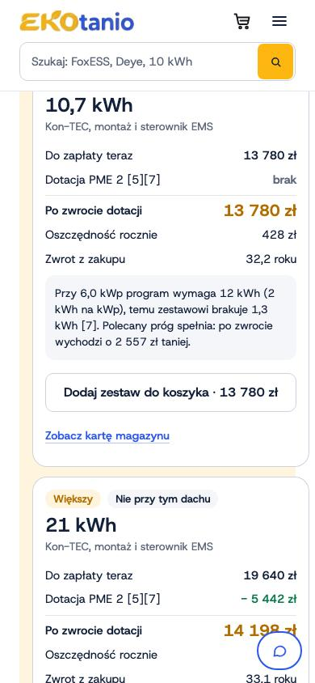
Krok 3
Mniejszy zestaw na tej samej mierze. Gdy nie łapie dotacji, karta mówi, ile brakuje do progu.
Otwórz ten krok w sklepie ↗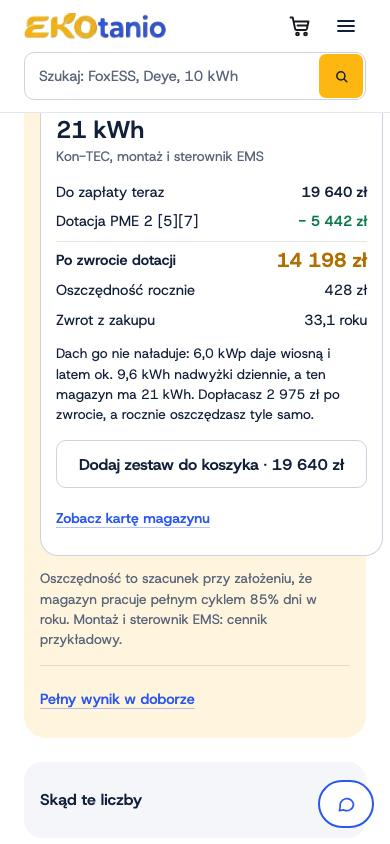
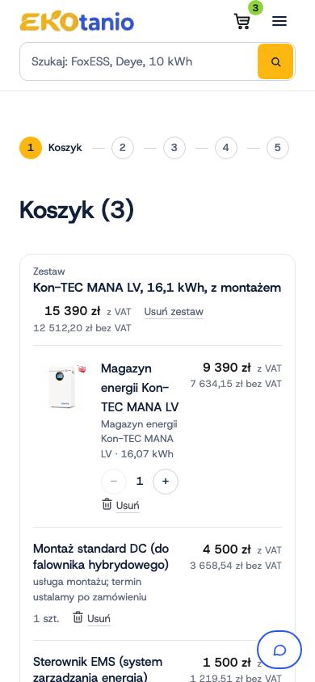
Krok 5
Koszyk przy każdej karcie: w koszyku komplet z montażem, ta sama kwota.
Otwórz ten krok w sklepie ↗Godziny w awarii
„Na ile godzin wystarczy magazyn, gdy zgaśnie sieć?”
Wersja 1: 7 kroków · wersja 2: 7 kroków
- Czy po wejściu z kafla widzisz, że Twoja odpowiedź została, i wiesz, jak ją zmienić?
- Czy widzisz od razu, która wersja jest szybka, a która dokładna?
- Czy rozumiesz, co działa w awarii, a czego sklep nie obiecuje?
- Czy po przejściu do wersji dokładnej Twoje odpowiedzi zostały?
Co odpadło względem wersji 1: pierwszy ekran z wyborem, co ma działać (odpowiedź przyszła z kafla).
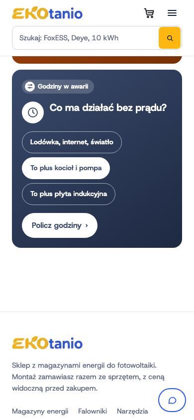
Kafel B na stronie narzędzi
Kafel „Godziny w awarii” w wersji B: klient zaznacza, co ma działać (to plus kocioł i pompa) i dotyka „Policz godziny ›”.
Otwórz kafle B w sklepie ↗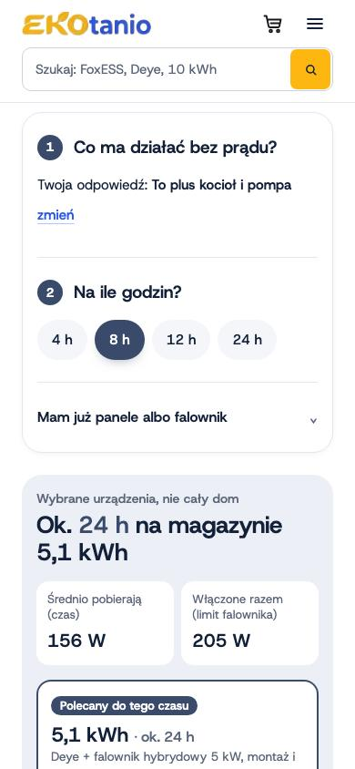
Wejście: od razu krok 2
Wersja prosta otwiera się z odpowiedzią z kafla w linijce „Twoja odpowiedź · zmień”, pod nią od razu drugie pytanie: na ile godzin.
Otwórz ten krok w sklepie ↗Krok 2
Wynik: ile godzin na polecanym magazynie, założenia obok (moc falownika, głębokość rozładowania, bez ładowania z paneli).
Otwórz ten krok w sklepie ↗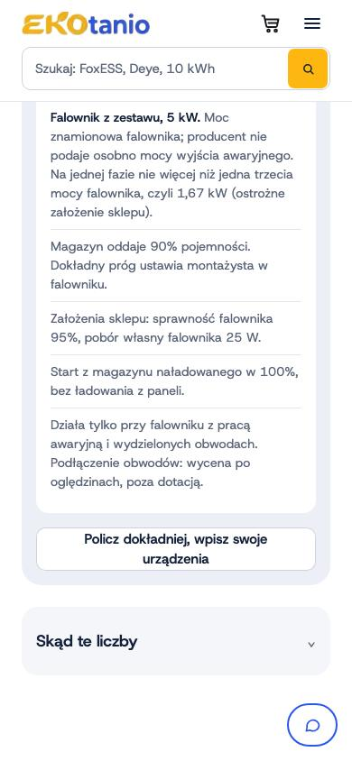
Krok 3
Założenia przy wyniku: co liczymy, skąd liczby, czego nie obiecujemy.
Otwórz ten krok w sklepie ↗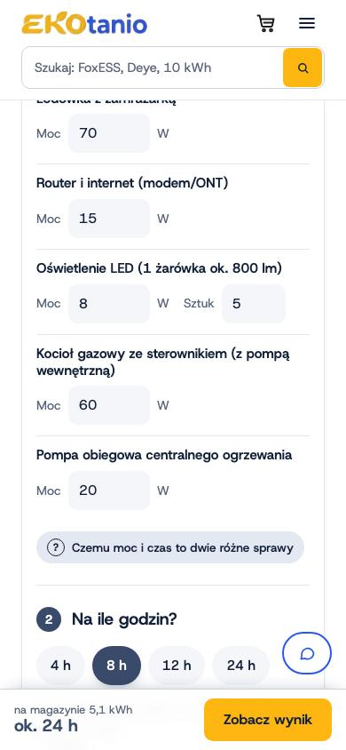
Krok 4
Przejście do wersji dokładnej: pakiet z kafla rozwija się w listę urządzeń, nic nie trzeba wpisywać od nowa.
Otwórz ten krok w sklepie ↗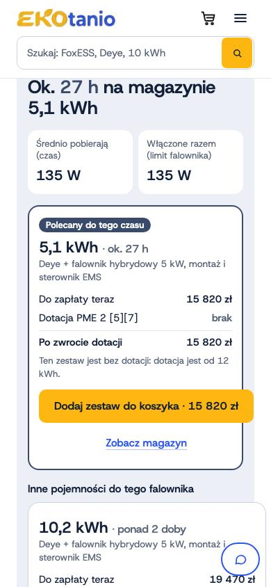
Krok 5
Wersja dokładna: średnie zużycie i suma mocy włączonych razem osobno, limit falownika.
Otwórz ten krok w sklepie ↗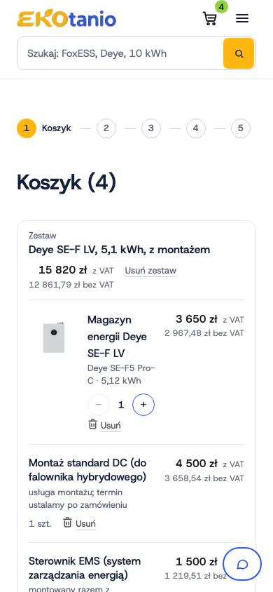
Porównywarka magazynów
„Który magazyn wybrać?”
Wersja 1: 8 kroków · wersja 2: 7 kroków
- Czy po wejściu z kafla widzisz, że Twoja odpowiedź została, i wiesz, jak ją zmienić?
- Czy na telefonie widać dwa magazyny bez przewijania w bok?
- Czy od razu widzisz, czym się różnią?
- Czy „brak danych producenta” jest zrozumiałe, a nie wygląda jak błąd?
Co odpadło względem wersji 1: pierwszy ekran z trzema domyślnymi magazynami i osobny krok z filtrem (filtr przyszedł z kafla).
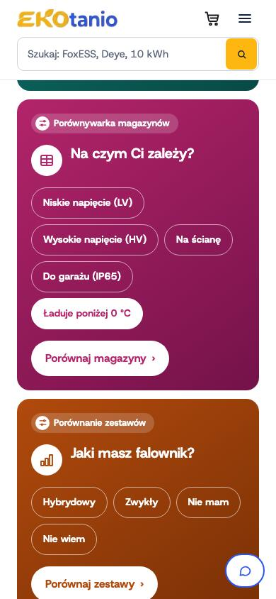
Kafel B na stronie narzędzi
Kafel „Porównywarka magazynów” w wersji B: klient zaznacza, na czym mu zależy (ładuje poniżej 0 °C) i dotyka „Porównaj magazyny ›”.
Otwórz kafle B w sklepie ↗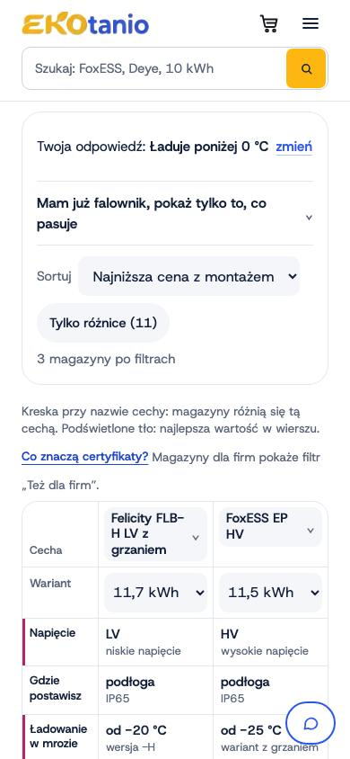
Wejście: od razu krok 2
Porównywarka otwiera się z filtrem z kafla w linijce „Twoja odpowiedź: Ładuje poniżej 0 °C · zmień” zamiast rzędu filtrów; tabela od razu tylko z magazynami, które ładują na mrozie.
Otwórz ten krok w sklepie ↗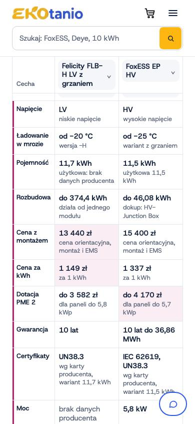
Krok 2
„Tylko różnice”: zostają wiersze, które naprawdę coś zmieniają. Kreska przy nazwie cechy oznacza różnicę, tło najlepszą wartość.
Otwórz ten krok w sklepie ↗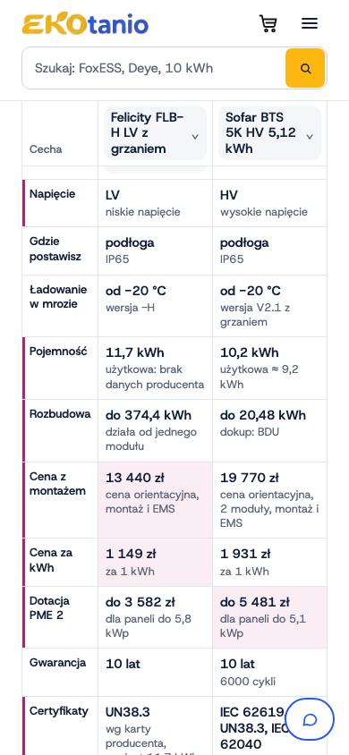
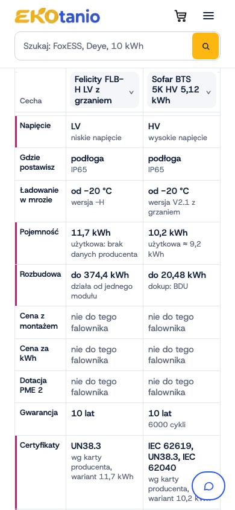
Krok 4
„Mam już falownik”: wiersz zgodności i cena liczą się pod falownik klienta, tym samym silnikiem co dobór.
Otwórz ten krok w sklepie ↗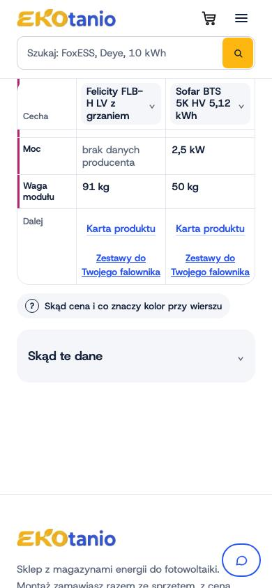
Krok 5
Z falownikiem Deye SG05LP1 oba magazyny ładujące na mrozie mają „nie do tego falownika”: w kolumnach zostaje tylko karta produktu, koszyka nie ma.
Otwórz ten krok w sklepie ↗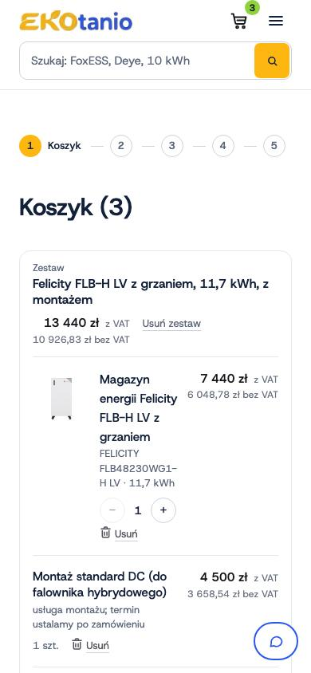
Krok 6
Koszyk: „Skompletuj zestaw” z pierwszej kolumny, bez wybranego falownika (wejście z kafla jeszcze raz, filtr mrozu zostaje).
Otwórz ten krok w sklepie ↗